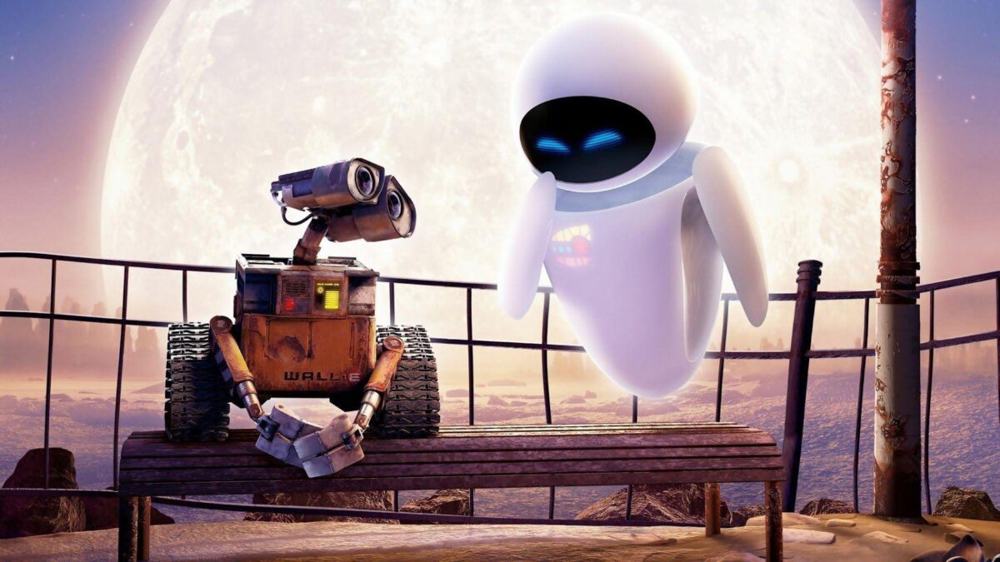
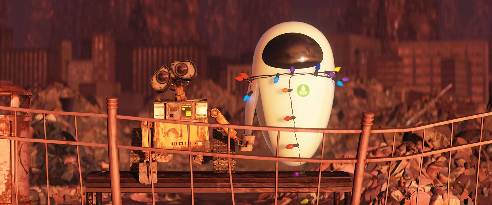
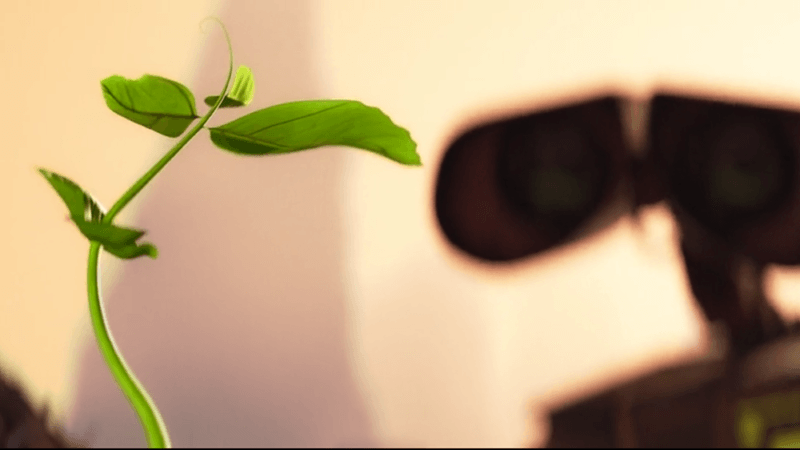

 É um filme de
animação americano de 2008 produzido pela Pixar Animation Studios e dirigido
por Andrew Stanton. A história segue um robô chamado WALL-E, criado no ano de 2100 para limpar a Terra coberta
por lixo. Ele se apaixona por um outro robô, chamado EVA, que tem a missão de encontrar pelo menos uma planta na
superfície do planeta Terra. Ele a segue para o espaço em uma aventura que irá mudar seu destino e o destino da
humanidade.
O filme se passa no ano de 2805, época em que a Terra é um planeta abandonado e coberto por
lixo, resultado de décadas de consumismo em massa, facilitado pela megacorporação Buy-n-Large (BnL). Desistindo
de restaurar o ecossistema, a BnL evacuou a Terra, levando a população a viver no espaço em uma nave estelar
chamada Axiom, totalmente automatizada, deixando no planeta apenas um exército de robôs compactadores de lixo
chamados "WALL-E" para limpeza durante um período de cinco anos. Entretanto, no ano de 2110, o ar da Terra se
tornou muito tóxico para suportar a vida, forçando a humanidade a permanecer no espaço indefinidamente.
No começo do filme, apenas uma unidade WALL-E permanece ativa, tendo desenvolvido personalidade própria, e
desenvolvendo também personalidades humanas, o hábito de coletar vários artefatos do lixo enquanto realiza seu
trabalho e se tornando amigo de uma barata. Um dia, WALL-E descobre uma pequena planta crescendo em meio ao lixo
e a leva para casa, em um depósito.
Mais tarde, uma espaçonave aterrissa
e implanta EVA, uma robô avançada, enviada pela nave
estelar da BnL, com a diretriz de procurar sinais de vegetação na Terra. WALL-E se apaixona pela inicialmente
fria e hostil EVA, que, gradualmente, se abranda e se torna amiga dele. Quando WALL-E a leva ao depósito e lhe
mostra a planta, EVA automaticamente a guarda, entrando em modo de espera (diretriz) e enviando um sinal de
recolhimento para a nave. Até que a nave chegue para resgatá-la, WALL-E a leva para um passeio de barco em um
rio de lixo, a protege de tempestades e cuida de EVA. Quando a nave finalmente chega para resgatá-la, WALL-E se
agarra à superfície exterior do foguete e parte para a Axiom.
Na Axiom, os passageiros humanos, vivendo em um ambiente de microgravidade e dependendo totalmente dos sistemas
automáticos da nave, sofreram severas perdas de massa óssea e se tornaram obesos mórbidos com o passar dos
séculos. O capitão da nave faz pouca coisa, deixando o controle da Axiom para o piloto automático robótico,
Auto.
WALL-E segue EVA até a ponte de comando da Axiom, onde o capitão descobre, ao escanear no holodetector a amostra
de planta coletada por EVA, que a Terra é habitável novamente e que a Axiom deverá fazer um hipersalto para
retornar ao planeta para que seus passageiros possam recolonizá-la. Todavia, Auto ordena que o GO-4, o robô
assistente do capitão, roube a planta como parte de uma diretriz final para manter a humanidade longe da Terra,
já que a vida foi incorretamente considerada insustentável cerca de 700 anos antes.
 Com a planta
desaparecida, EVA é considerada defeituosa e enviada para reparos junto com WALL-E. Ele confunde a
inspeção de EVA com uma tortura e a liberta, acidentalmente libertando também uma horda de robôs em mal
funcionamento, classificando-os como robôs dissidentes. Brava com as perturbações de WALL-E, EVA leva-o até uma
nave de fuga, na qual pretende enviá-lo de volta à Terra. À porta da nave, testemunham o GO-4 colocando lá a
planta para iniciar uma sequência de autodestruição no espaço. WALL-E entra na nave antes de ela ser lançada,
recupera a planta e escapa ileso antes da explosão. Ele então se reconcilia com EVA e ambos celebram e dançam ao
redor da Axiom.
A planta é levada ao capitão, que assiste às gravações de EVA de uma Terra desolada e percebe que a humanidade
deve retornar ao planeta para recuperá-lo. Entretanto, Auto revela sua diretriz de "não retornar" e arma um
motim contra o capitão, desabilitando WALL-E com um taser. EVA e WALL-E são então jogados no lixo, onde são
compactados para serem lançados ao espaço. EVA consegue libertar a si e a WALL-E e tenta encontrar peças para
consertá-lo, mas percebe que as peças necessárias só existem no depósito na Terra.
No início do acionamento do hipersalto da Axiom, os passageiros são levados ao centro da nave, mas Auto impede o
capitão de completar o hipersalto, iniciando uma luta com ele. WALL-E tenta colocar a planta no holodetector,
mas Auto o esmaga ao fechá-lo sobre WALL-E. Então EVA o ajuda e o capitão finalmente consegue desativar Auto e
abrir o holodetector. Eva coloca a planta no holodetector, soltando WALL-E e enviando a Axiom para a Terra.
Ao chegarem à Terra, EVA leva WALL-E para o depósito, consertando-o e reativando-o com sucesso. Infelizmente, a
memória de WALL-E é apagada e ele é revertido para sua programação original. Arrasada, EVA dá a WALL-E um
"beijo" de despedida, causando uma fagulha elétrica que faz com que ele recupere sua memória e personalidade.
WALL-E e EVA então alegremente se reúnem em enquanto os robôs e os humanos da Axiom começam a restaurar o
ambiente da Terra.